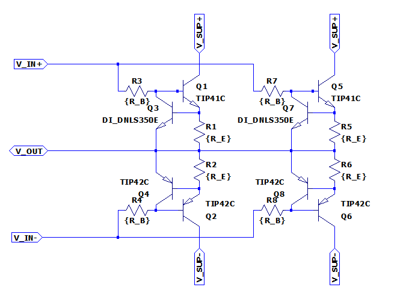

Output Stage
Output stage class AB for driving the load of the powersupplysink.
Interface & Requirements
- Voltage Inputs
- \(I_{in} \approx 500mA < 1A \quad \forall \quad U_{out} \times I_{out}\)
- Voltage controlled input should be \(V_{IN+} (t) = V_{IN-} (t) + V_{offset}
\quad | V_{offset} \in \mathbb{R}_+\)
V_IN+V_IN-- \(V_{offset} \approx 1V to 1.5V\) according to simulation for low crossover distortion operation.
- Required input voltage swing: \(V_{IN} \in [-3V, +8V]\)
- Voltage Output
- \(U_{out} \in [0V, +5V]\)
- \(I_{out} \in [-20A, +20A]\)
- Short circuit I limit \(| max(I_{out}) \leq |I_{max}| \leq |1.25 max(I_{out})|\)
- Supply Voltages
- \(+10V\) @ \(250W\) (\(25A\))
- \(-5V\) @ \(125W\) (\(25A\))
Circuit Selection and Design
Overview
 Outstage Schematic Simulation with N2 parallel transistors, \(n = 12\) is used for total schematic.
Transistor Technology Selection
To realize the power amplification complementary bjt transistors are chosen, because
- their collector current can be controlled by the base current
- driving circuitry for FETs, IGBTs is more complex
- complementary parts are available to construct complementary emitter follower (push pull output stage)
Transistor Type
With the specs it is possible to find parts like MJ11032 and MJ11033 as
- complementary
- darlington
- high current
- high power dissipation package TO−204 (TO−3)
transistors, that could maybe be used with high efforts for cooling. Still the issue of scalability beyond 20A is not solved. In order to ease the requirements on the thermal management multiple BJTs are connected in parallel to share the load.
Load Balancing & Short Circuit Protection
To achieve a balanced load distribution and avoid thermal runaway due to changes of \(V_{BE}\) emitter resistors are used for compensation. The voltage drop at the emitter resistor can additionally be utilized to deploy short circuit protection by current limiting. The current limit can be enforced by lowering the bias currents when the voltage drop across the emitter resistors is exceeding a predefined threshold.
Emitter (Ballast) Resistor
Considering a single npn transistor of the multiple paralleled transistors as system \(S\) the thermal evolution of the system can be approximated by: $$ \frac{dQ}{dt} = P_{el} - P_{th} $$ The thermal power dissipation \(P_{th}\) can be approximated from the stored thermal energy \(Q\) as follows: $$ P_{th} \approx \frac{C_{th} Q}{R_{th}} = \frac{T}{R_{th}} $$ Where \(C_{th}\) is the thermal mass of the system \(S\), \(R_{th}\) is the thermal resistance in \([\frac{K}{W}]\) and \(T\) is the absolute temperature. The delivered electrical power converted to thermal power in \(S\) is described by: $$ P_{el} = U_{CE} I_{C} + U_{BE} I_{B} $$
The temperature coefficient \(\gamma \quad [\frac{mV}{K}]\) of a given npn transistor describes the change of \(U_{BE}\) at a certain operating point for a given temperature change, for constant \(I_C\). It is mainly derived from the temperature dependence of the reverse bias current \(I_S\). The electrical power can therefore be described depending on the temperature by: $$ I_B = \underbrace{ \left[ I_S \exp \left( \frac{U_{BE} - \gamma \Delta T}{U_T} \right) \right] }_{I_B} $$
Thermal runaway of the transistor is can be avoided by \(\frac{dQ}{dt} = P_{el} - P_{th} < 0\) and therefore: $$ R_E > \frac{1}{I_B} \left( U_C + \frac{U_{BE} - \gamma \Delta T}{\beta_0} - \frac{T}{R_{th}} \frac{1}{\beta_0 I_B} \right) $$
For the worst case of \(R_{th} \to \infty\) and with \(U_C >> \frac{U_BE - \gamma \Delta T}{\beta_0}\) and \((\beta_0 + 1) \approx \beta_0\) the expression can be simplified to: $$ R_E \gtrapprox \frac{U_C}{\beta_0^2 I_B} = \frac{U_C}{\beta_0^2 I_S \exp \left( \frac{U_{BE} - \gamma \Delta T}{U_T} \right)} $$
For \(U_C = 15V\), \(\beta_0 = 25\), \(I_S = 10^{-15} A\), \(U_{BE} = 700 mV\), \(U_T = 26mV\), \(\Delta T = 100K\) and \(\gamma = -2 \frac{mV}{K}\) the constrained for the ballast resistor is $$ R_E \gtrapprox 22 m \Omega $$
Info
The thermal voltage \(U_T\) is not temperature independent as assumed in this calculation. The effect of the thermal voltage change on the base current is rather small compared to the effect of \(\gamma\). Additionally the thermal voltage is increased with temperature reducing the base current thus the effect counteracts the thermal runaway. Therefore when neglected the inequality constraint is not violated.
The selected current limiting transistor of the short circuit protection
DNLS350 has an base-emitter turn on voltage
$$ V_{BE,on} \approx 700mV | I_{C} = 300mA, T = 25°C $$
$$ V_{BE,on} \approx 600mV | I_{C} = 300mA, T = 85°C $$
Therefore the range of the ballast resistor is further restricted by
- A minimum value which is required to still limit the current below the allowed \(I_{max} / n\) even at room temperature, where \(n = 12\) is the number of used power transistors paralleled. $$ R_E > \frac{700mV}{25A / 12} = 330 m \Omega $$
- A maximum value which is must not be exceeded to allow the nominal current flow \(I_{out} / n\) even at high temperature, where \(n = 12\) is the number of used power transistors paralleled. $$ R_E < \frac{600mV}{20A / 12} = 360 m \Omega $$
The power rating of the resistor shall be $$ P_{RE} = \frac{I_{max}}{n}^2 \cdot R_E $$ or better. In the case of the ballast resistor being limited by the nominal current flow at low \(V_{BE,on}\) this would be: $$ P_{RE} > \frac{25A}{12}^2 \cdot 360m \Omega \approx 1.6 W $$
Short Circuit Protection
To limit the current in case of a short circuit a current limiting transistor can be connected from the base of each power transistor over the ballast resistor. When the voltage across the ballast resistor \(U_{RE}\) rises to \(U_{BE}\) of the limiting transistor the base current of the power transistor will be limited. The current limiting is applied separately for each power transistor.
The base resistor \(R_B\) cannot exceed a certain resistance, because it will increase the input resistance until the preceeding stage cannot drive enough current into the base of the power transistors.
For an expected maximum voltage \(U_{in,max} = U_{SUP+} - 2V = 8V\) of the preceeding stage the maximum tolerable \(R_B\) is for an maximum required base current \(I_{b,pwr} = I_{out,max} / n / \beta_0\) of the power transistor. $$ R_B < \frac{U_{in,max} - U_{outmax} - 2* U_{BE,on}}{I_{b,pwr}} = \frac{8V - 2 \cdot 1V - 5V}{\frac{20A}{12 \cdot 40}} \approx 24 \Omega \ $$
By using \(R_B\) from E12, it can be chosen. $$ R_B = 22 \Omega $$
The maximum collector current of the \(I_{C,lmt}\) of the current limiting transistor can be calculated depending on the collector voltage \(U_{C,lmt} = U_{B,pwr}\). $$ I_{C,lmt} = \frac{U_{in,max} - U_{C,lmt}}{R_B} - I_{b,pwr} $$ $$ U_{in,max} \leq 8V \quad \wedge \quad U_{C,lmt} > 2 \cdot U_{BE,on} $$ $$ \implies I_{C,lmt} \leq \frac{8V - 2 \cdot 1V}{22 \Omega} - \frac{20A}{12 \cdot 40} \approx 230mA $$
The thermal power requirement on the limiting transisor can be approximated by neglecting base current and base-emitter voltage as follows. $$ P_{lmt} \approx I_{C,lmt} \cdot U_{C,lmt} = - \frac{1}{R_B} U_{C,lmt}^2 + (\frac{U_{in,max}}{R_B} - I_{b,pwr}) U_{C,lmt}$$ With $$ \frac{\partial P_{lmt}}{\partial U_{C,lmt}} = 0 \implies U_{C,lmt} = 3.56 V$$ the \(U_{C,lmt}\) for maximum power dissipation in the limiting transistor can be found from which the maximum power dissipation in the limiting transistor can be calculated: $$ P_{lmt} < I_{C,lmt}(3.56V) \cdot 3.56V \approx 580mW $$
Thermal Resistance Consideration
The current and thermal load distribution are the factors significantly influencing the multiplicity of paralleled transistors. As it is expected that thermal load will be more restrictive than current load, the multiplicity is derived using the thermal characteristics. From the multiplicity a requirement for component selection regarding the maximum current capability is established. From that a complementary bjt pair is selected to fulfill the requirements.
The biggest thermal active power is achieved at highest voltage drop and highest current through the device \(P = U I\). The maximum voltage drop and current of the transistors is achieved with a short circuit of the output.
- Short circuit to \(0V\): maximum power dissipation in npn transistors for power delivery (operational in first quadrant, supply of electrical power)
- Short circuit to \(5V\): maximum power dissipation in pnp transistors for power consumption (operational in second quadrant, sink of electrical power)
Because the supply voltages are respectively \(5V\) higher or lower than the limits and the sourced and sunk currents are symmetrical both power dissipation cases can be treated equal. The following calculations are conducted for the npn transistors with a short circuit to \(0V\). The maximum voltages are limited by the available voltage of the power supply rails. The following ESD and protection circuitry also guarantees, that a short circuit will not be able to imprint voltages outside of the operational interval of \([0V, 5V]\) to the output. Similarly the maximum current is enforced by the short circuit protection of this output stage. The current limit of this output stage is determining the maximum current, even in case of failure of preceding circuitry.
The maximum thermal power dissipation due to output current is approximated by: $$ P_{th,max} = U I = (U_{supply} - U_{sc}) I_{max}\ = (10V - 0V) 1.25 \cdot 20A = 250W $$
This approximation is an upper bound for the power dissipation including
- the thermal dissipation by the control voltage and current at the base, in case the base current is also limited by the current limiting circuitry. That is the case for the short circuit protection utilizing the voltage drop across the emitter resistors, because \(I_E = I_C + I_B\) holds. If a limiting transistor is used to bypass excess base current this limiting transistor must rendered inoperable before the thermal dissipation of the output stage transistors is exceeded. It is assumed that the preceding stage does not deliver enough power to thermally destroy the current limiting transistors, while completely delivering additionally the entire short circuit current \(I_{max}\). Destruction of the preceding stage is likely before the thermal power dissipation limit for the output stage transistors is exceeded.
- the quiescent current. The quiescent current is also contributing to the limited current \(I_{max}\), as it flows from the collector to the emitter.
Combination of Heatsinks
Because the worst case conditions for the npn and pnp transistors can only occur exclusively the transistors can share one combined heatsink with unchanged thermal requirements. This requires the assumption, that the preceding stage does not allow excess quiescent current to flow.
Package Selection
To reduce the number of devices needed the thermal resistance should be low. Therefore only selected well established packages are compared. The values for thermal resistance are retrieved from ROHM Co., Ltd 1 unless noted otherwise.
| Package | Technology | \(R_{th,JA} [K/W]\) | \(R_{th,JC} [K/W]\) |
|---|---|---|---|
| TO-220AB | THT | 80 | 0.8 |
| TO-247 | THT | 30 | 0.6 |
| TO-204 (TO-3) 2 | THT | 30 | 0.8 |
| TO-252 (DPAK) | SMD | 147 | 4.9 |
| TO-263 (D2PAK) | SMD | 80 | 4.2 |
| HSOP8 | SMD | 41.7 | 5.6 |
Info
Expected thermal resistance for case to heatsink with thermal grease and electrical isolation \(R_{th,CH} \approx 1 K/W\). Heatsinks in extruded profile shape (ger. Strangkühlkörper) can provide approximately \(R_{th,HA} \approx 1K/W ... 3K/W\) for our use case. 3
If at an ambient temperature of \(40°C\) the maximum desired junction temperature is considered to be \(100°C\) (lifespan), a maximum temperature difference of \(T_{diff} = T_{j,max} - T_{a,max} = 100°C - 40°C = 60K\) is estimated. For cooling without a heatsink this would imply a lower bound of the multiplicity of paralleled transistors of: $$ n_{th,JA} \ge \frac{P_{th,max} R_{th,JA}}{T_{diff}} $$
With \(min(R_{th,JA}) = 30 K/W\) in the case of TO-247 packages this yields an
uneconomical high number of required components:
$$ n_{th,JA} \ge \frac{250W \cdot 30K/W}{60K} = 125 $$
To reduce the number of required components a heatsink will be employed. For the
most conductive SMD package TO-263 (D2PAK) even with an ideal heatsink
\(R_{th,CA} = 0 K/W\) to the PCB the number of required packages is:
$$ n_{th,TO-263} \ge \frac{P_{th,max} (R_{th,JC} + R_{th,CA})}{T_{diff}}\
= \frac{250W \cdot (4.2K/W + 0K/W)}{60K} = 17.5 $$
For the real application dissipating 250W into the PCB will yield high thermal
stress and require a significant area on the PCB. Therefore one of the THT
mounted packages is preferred. With an ideal heatsink the number of components
is:
$$ n_{th,TO220AB} \ge \frac{250W \cdot (0.8K/W + 0K/W)}{60K} \approx 3.3 $$
$$ n_{th,TO247} \ge \frac{250W \cdot (0.6K/W + 0K/W)}{60K} = 2.5 $$
$$ n_{th,TO204} \ge \frac{250W \cdot (0.8K/W + 0K/W)}{60K} \approx 3.3 $$
Component Selection
Complementary Power Transistors
Search on Mouser with filters
- \(I_{C,max} > 4 A\)
- \(V_{CE,max} > 20 V\)
- \(P_{tot} > 30 W\)
- THT-Package
Procedure
- Get data from datasheet
- Calculate the power which can be dissipated \(P_{real} [W]\) at
- \(R_{CA} = 2.4 K/W\), (\(0.4 K/W\) from isolation
WS 220, \(2 K/W\) fromSK662 200) - \(T_{J,safety} = 30K\)
- \(T_{amb} = 25°C\)
- \(R_{CA} = 2.4 K/W\), (\(0.4 K/W\) from isolation
- Get sensible collector current \(I_{C,real} [A]\) and corresponding dc gain \(\beta_0\) from datasheet
- Calculate minimum number of required components (NPN and PNP) with
- \(n = 2 \cdot \max ( \lceil P_{th,max} / P_{real} \rceil, \lceil I_{max} / I_{C,real} \rceil)\)
- Calculate the total price \(\text{Price total} = n \cdot \text{Price p. unit}\)
Result
See table below with results, which are exported from excel.
- BD433/5/7, BD434/6/8 is rejected in favor of a TO-220 package, because for high number of components it is easier to mount.
-
MJE3055T, MJE2955T is rejected in favor of TIP42C, TIP42C, because the price for the complementary part is higher with approx 1 Eur than visible in the list.
-
TIP41C, TIP42C is favored for the design.
| Part Number | Package | \(T_{J,max} [°C]\) | \(P_{tot} [W]\) | \(P_{real} [W]\) | \(I_{C,max} [A]\) | \(I_{C,real} [A]\) | \(\beta_0\) | \(I_{B,total} [A]\) | \(U_{BE,on} [V]\) | \(n\) | \(\text{Price p. unit} [Eur]\) | \(\text{Price total} [Eur]\) |
|---|---|---|---|---|---|---|---|---|---|---|---|---|
| MJE3055T, MJE2955T | TO-220 | 150 | 75 | 23.3606557377049 | 10 | 4 | 20 | 1 | 1.8 | 22 | 0.69 | 15.18 |
| BD433/5/7, BD434/6/8 | SOT-32 | 150 | 36 | 16.1 | 4 | 2 | 40 | 0.5 | 1.2 | 32 | 0.502 | 16.064 |
| TIP41C, TIP42C | TO-220 | 150 | 65 | 21.9 | 6 | 4 | 30 | 0.6 | 2 | 24 | 0.72 | 17.28 |
| 2N5191G, 2N5194 | TO-225 | 150 | 40 | 17.1 | 4 | 2 | 20 | 1 | 1.2 | 30 | 0.577 | 17.31 |
| D44VH10, D45VH10 | TO-220 | 150 | 83 | 24.3 | 15 | 4 | 20 | 1 | 1.2 | 22 | 0.83 | 18.26 |
| D44H8, D45H8 | TO-220 | 150 | 50 | 19.3 | 10 | 4 | 40 | 0.5 | 1.5 | 26 | 0.772 | 20.072 |
| TIP35CW, TIP36CW | TO-247 | 150 | 125 | 27.9 | 25 | 3 | 30 | 0.6 | 2 | 18 | 1.87 | 33.66 |
| NJW3281G, NJW1302G | TO-3P | 150 | 200 | 31.4 | 15 | 8 | 45 | 0.4 | 1.5 | 16 | 3.65 | 58.4 |
| MJW21196, MJW21195 | TO-247 | 150 | 200 | 31.4 | 16 | 8 | 20 | 1 | 2 | 16 | 4.11 | 65.76 |
| MJ15022, MJ15023 | TO-3 | 200 | 250 | 46.7 | 16 | 10 | 15 | 1.3 | 2.2 | 12 | 6.29 | 75.48 |
| MJW21194, MJW21193 | TO-247 | 150 | 200 | 31.4 | 16 | 8 | 20 | 1 | 2.2 | 16 | 4.81 | 76.96 |
| MJL21196, MJL21195 | TO-264 | 150 | 200 | 31.4 | 16 | 8 | 25 | 0.8 | 2.2 | 16 | 4.9 | 78.4 |
| MJ802, MJ4502G | TO-3 | 200 | 200 | 44.2 | 30 | 7.5 | 25 | 0.8 | 1.3 | 12 | 7.43 | 89.16 |
| MJL4281AG, MJL4302AG | TO-264 | 150 | 230 | 32.2 | 15 | 8 | 50 | 0.4 | 1.5 | 16 | 5.59 | 89.44 |
Heatsink
The heatsink is searched in catalogue of company Fischer Elektronik.
- Low thermal resistance \(R_{th} < 4 K/W\), smaller is better as it reduces cost by not needing more transistors.
- Mounting style, clip mounting for assembly of heatsink after soldering and easier repair.
- "Double sided mounting" at PCB for reduction of size. (PNP and NPN can be mounted on same heatsink)
Result
- 2x
SK499 120available at AudioTube - 30x THFU2 Clip
- 30x Silicon Insulator
- Fan for forced convection: https://mou.sr/3yeFHsr
Alternatives:
- 2x
SK662 100with \(2 K/W\) - 2x
SK593 100with \(2 K/W\) (bigger) SK50(mounting with custom CNC, probably expensive)
Mounting clip: THFU 2
Isolation washer: WS 220
Current Limiting Transistor
Search on Mouser with filters
- \(I_{C,max} > 2 A\)
- \(P_{tot} > 1 W\)
- Sort by price ascending
- Check that complementary type is available
Results
| Part. No | Package | Info |
|---|---|---|
| DNLS350, DPLS350E | SOT223 | Provides the desired performance for low price |
| PBSS4350X, PBSS5350X | SOT89 | Power dissipation, critical for SOT89, big footprint required |
| PBSS5350D, PBSS4350D | SOT4547 | Power dissipation to high |
Select DNLS350, DPLS350E for easier thermal management in favor of the other options.
Ballast Resistor
Search on Mouser
To achieve \(R_E \approx 330 m \Omega\) with \(P_{RE} = 3W >> 1.6 W\) the following options have been found through mouser search:
| Part. No. | Resistance \([m \Omega]\) | Power Rating \([W]\) | Price p. P. [Eur] |
|---|---|---|---|
| RR03JR33TB | 330 | 3 | 0.157 |
| RR02JR68TB | 680 | 2 | 0.14 |
Result
While the RR03JR33TB is cheaper in total, because only one component is required per transistor except two as for RR02JR68TB, RR02JR68TB is preferred as for the parallel expected value \(R = 680 / 2 m \Omega\) is expected to be better in the desired range of \(330 m \Omega\) to \(350 m \Omega\), when the tolerance is also of concern. For quantities \(100\) or bigger the price drops also to \(0.07 Eur\).
Base Resistor
The base resistor faces voltage drop up to \(6V\) therefore its power rating should be \(P >> (6V)^2 / 22 \Omega \approx 1.6 W\).
Search
Searching on Mouser for:
- \(R = 22 \Omega\)
- \(P > 3W\)
Result
RR03J22RTB for \(0.157 Eur p. P.\)
Simulation
See ./outstage.asc and ./outstage.asy.
Hardware tests in Laboratory
Layout and Assembly Considerations
PCB Layout
- Add testpins for ballast resistor voltage measurement (measurement)
- Add testpins for input voltages (measurement, test source)
- Add testpin for output (measurement, load) 4
- Current limiting Transistor footprint, include bigger pad as thermal relieve
- Pull up/down for inputs, when stage is isolated, to run other tests.
Assembly
- The power transistors should be mounted thermally coupled on the same heatsink to reduce thermal drift of individual transistors.
- Additionally one heatsink can be shared by the npn and pnp power transistor, because they are not subject to simultaneous heating.
- Apply thermal grease and electrical insulation from transistors to heatsink.
Commissioning and Testing
Load Distribution
Test ID: v1.1.0/pss/power-electronics/outstage/load-distribution/<suffix>
Separation of outstage in individual units
If the output stage is split into multiple equivalent units which will be used in parallel the test can be conducted with proportionally reduced currents.
$100 m \Omega
The resistance can be obtained by using a copper wire:
- \(A = 4 mm^2, l \approx 24m\) or
- \(A = 1.5 mm^2, l \approx 9m\)
- Connect
- Positive Rail (test id suffix:
positive)- Output with \(R = 100 m \Omega\) to GND (\(P = 10W\))
- positive Input \(U_{IN+} = 2V\)
- negative Input \(U_{IN-} = 0V\)
- Negative Rail (test id suffix:
negative)- Output with \(R = 100 m \Omega\) to GND (\(P = 10W\))
- positive Input \(U_{IN+} = 0V\)
- negative Input \(U_{IN-} = -2V\)
- Positive Rail (test id suffix:
- Power on supply voltage
- Measure Voltages
- Positive Rail
- Voltage across positive ballast resistors \(U_{RE+}\)
- Negative Rail
- Voltage across negative ballast resistors \(U_{RE-}\)
- Positive Rail
- Power off supply voltage
- Test passed if
- \(U_{RE} \neq 0V \quad \wedge \quad U_{RE} \in \overline{U_{RE}} ( 1 \pm 10 \%) \quad \forall \quad U_{RE}\)
Short Circuit Test
Test ID: v1.1.0/pss/power-electronics/outstage/short-circuit/<suffix>
Separation of outstage in individual units
If the output stage is split into multiple equivalent units which will be used in parallel the test can be conducted with proportionally reduced currents.
- Connect
- Positive Rail (test id suffix:
positive)- Output with \(R \to 0 \Omega\) to GND (\(I = 20A\))
- positive Input \(U_{IN+} = 2V\)
- negative Input \(U_{IN-} = 0V\)
- Negative Rail (test id suffix:
negative)- Output with \(R \to 0 \Omega\) to 5V (\(I = 20A\))
- positive Input \(U_{IN+} = 0V\)
- negative Input \(U_{IN-} = -2V\)
- Positive Rail (test id suffix:
- Power on supply voltage
- Measure
- Positive Rail
- Voltage across positive ballast resistors \(U_{RE+}\)
- Output current \(I_{Output}\)
- Negative Rail
- Voltage across negative ballast resistors \(U_{RE-}\)
- Output current \(I_{Output}\)
- Positive Rail
- Power off supply voltage
- \(U_{RE} \neq 0V \quad \wedge \quad U_{RE} \in \overline{U_{RE}} ( 1 \pm 10 \%) \quad \forall \quad U_{RE}\)
- \(20A \leq |I_{Output}| \leq 25 A\)
-
2023, ROHM Co., Ltd., "List of Transistor Package Thermal Resistance", accessed at 06.04.2024 ↩
-
2021, Hunter, G., "TO-3 Component Package", accessed at 07.04.2024 ↩
-
https://www.fischerelektronik.de/service/kataloge-up-to-date/ ↩
-
Screw terminal can be used for up to \(|I| = 20 A\) ↩